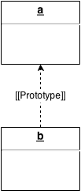
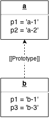
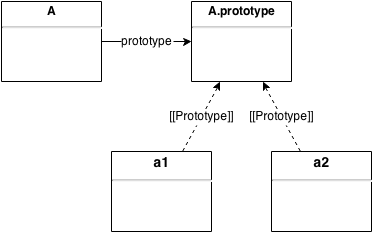
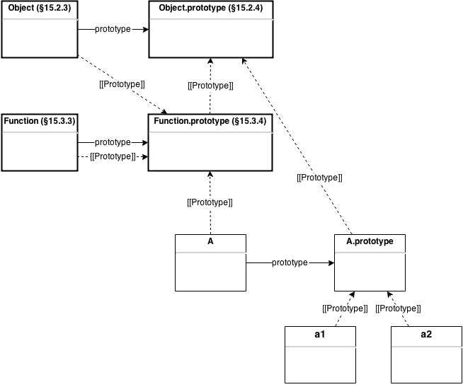

How Prototype Works in JavaScript
A prototype in JavaScript is an object with a special role: it’s the parent of another object. And the role of a parent is to provide properties to its children.
Let’s see how a prototype is linked to another object.
Internal Property [[Prototype]]
Every object has an internal property named [[Prototype]]. The value
of [[Prototype]] is either a reference to another object or
null. Example:

Observations:
ahas no prototype.ais the prototype ofb.aandbform a prototype chain starting atb.
a.[[Prototype]] // => null
b.[[Prototype]] // => a
Note that this is not valid JavaScript code as we cannot access
directly an internal property of an object. We will see later how to
retrieve the value of [[Prototype]].
Let’s now see what’s the purpose of the prototype chain.
Delegation
When a reference is made to a property in an object, the interpreter
first looks if a property of that name is contained in the object. In
that case, its value is returned. Otherwise, the interpreter checks
its object’s prototype (referenced by the [[Prototype]] internal
property), then the object’s prototype’s prototype and so on. This
process continues until the property is found or the interpreter
reaches the end of the prototype chain. In that case, undefined is
returned.
Example:

a.p1 // => 'a-1'
a.p2 // => 'a-2'
a.p3 // => undefined
a.p4 // => undefined
b.p1 // => 'b-1'
b.p2 // => 'a-2'
b.p3 // => 'b-3'
b.p4 // => undefined
Assignment of [[Prototype]]
Every function comes with a prototype property (not to be confused
with the [[Prototype]] internal property) whose value is an empty
object.
When a function is used as a constructor (i.e. called as part of a
new expression) the value of the [[Prototype]] internal property
of the newly created object is set to the value of the prototype
property of the function. Example:
var A = function () {};
A.prototype // => {}
var a1 = new A(); // A is invoked as a constructor.
a1.[[Prototype]] // => A.prototype
var a2 = new A();
a2.[[Prototype]] // => A.prototype

Let’s add properties to those objects:
var A = function() {};
A.p1 = 'A-1';
A.p4 = 'A-4';
A.prototype.p1 = 'A-P-1';
A.prototype.p3 = 'A-P-3';
var a1 = new A();
a1.p1 = 'a1-1';
var a2 = new A();
a2.p2 = 'a2-2';
And let’s see how they are looked up:
A.p1 // => 'A-1'
A.p2 // => undefined
A.p3 // => undefined
A.p4 // => 'A-4'
A.prototype.p1 // => 'A-P-1'
A.prototype.p2 // => undefined
A.prototype.p3 // => 'A-P-3'
A.prototype.p4 // => undefined
a1.p1 // => 'a1-1'
a1.p2 // => undefined
a1.p3 // => 'A-P-3'
a1.p4 // => undefined
a2.p1 // => 'A-P-1'
a2.p2 // => 'a2-2'
a2.p3 // => 'A-P-3'
a2.p4 // => undefined
A is not part of the prototype chains starting at a1 and
a2. Thus, it has no influence when a property is looked up in a1
and a2.
Overall View
To keep things simple, some objects were omitted in the previous examples. Let’s add the native objects (bold) to the previous example.

The properties of the native objects are documented in the ECMAScript Language Specification. Below are links to an annotated version of the specification for the corresponding objects:
By following the dashed lines, we know exactly what properties are
inherited by each object. For instance, properties defined in
Object.prototype (such as toString and hasOwnProperty) are
inherited by all objects, because every prototype chain ends with
Object.prototype.
Accessing [[Prototype]]
There is currently one standard way to access the [[Prototype]]
internal property of an object and it’s by using the function
Object.getPrototypeOf. Example:
var A = function() {};
var a = new A();
Object.getPrototypeOf(a) === A.prototype // => true
Although most implementations currently support the __proto__
property, it is not part of the current standard (ECMAScript 5). But
it will most likely be part of the next
standard. Example:
a.__proto__ === A.prototype // => true
Summary
-
A prototype is an object.
-
Every object has a
[[Prototype]]internal property. -
A list of objects linked through the
[[Prototype]]internal property is called a prototype chain. -
When a reference is made to a property in an object, that reference is to the property of that name in the first object in the prototype chain that contains a property of that name.
-
Every function has a
prototypeproperty. -
When a function is invoked as a constructor, the
[[Prototype]]internal property of the newly created object is set to theprototypeproperty of the function.